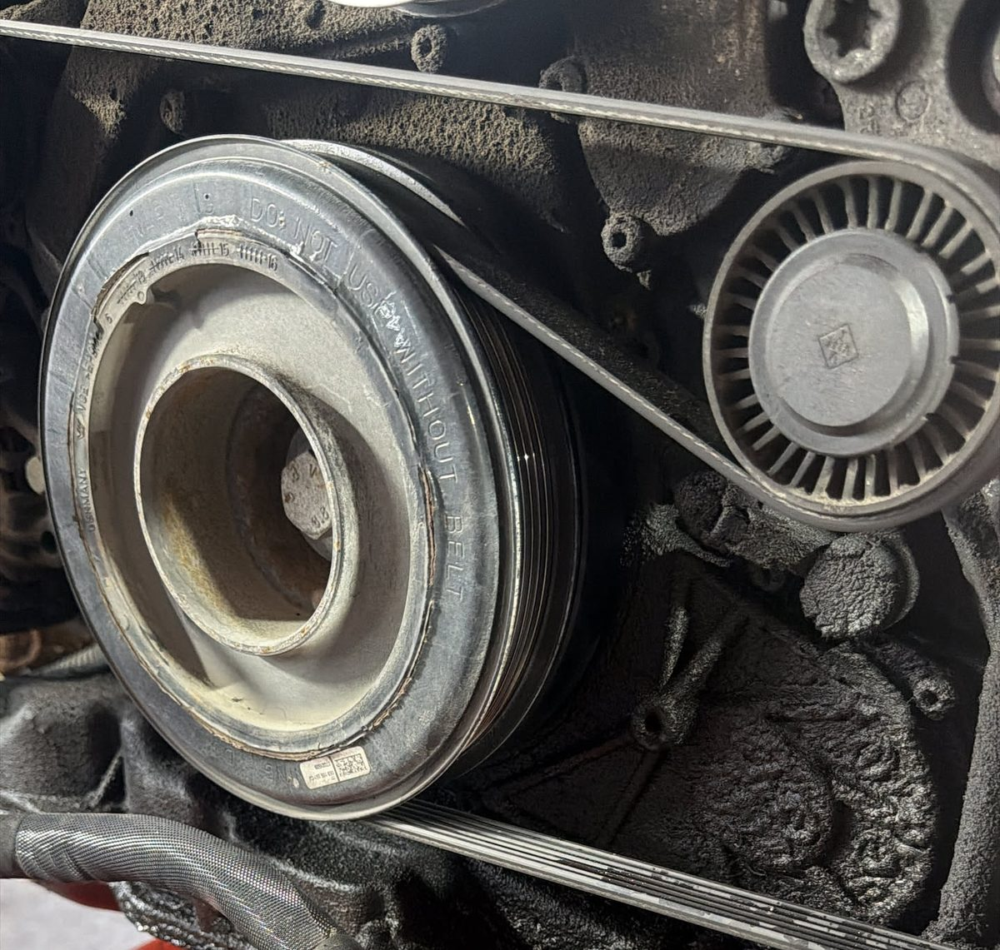

Poradňa autoservisu autoZ
Pískanie pri štarte auta
Ostré pískanie po naštartovaní, ktoré po chvíli utíchne, má najčastejšie na svedomí remeň príslušenstva. Vysvetľujeme, odkiaľ sa zvuk berie, kedy ide len o vlhkosť a kedy treba skontrolovať remeň, napínač alebo alternátor.

Zastavte na bezpečnom mieste a vypnite motor. Remeň mohol prasknúť alebo zoskočiť. Bez neho alternátor nenabíja batériu a pri niektorých motoroch nepoháňa ani vodné čerpadlo – motor sa potom môže prehriať.
Zvyčajne môžete jazdiť ďalej. Remeň a napínač však dajte skontrolovať pri najbližšej príležitosti – pískanie je prvý signál, že remeň prekĺzava.
Odkiaľ sa pískanie pri štarte berie
Remeň príslušenstva (drážkový, rebrovaný remeň na prednej strane motora) prenáša silu z kľukového hriadeľa na alternátor, kompresor klimatizácie, často aj na čerpadlo posilňovača riadenia a pri niektorých motoroch na vodné čerpadlo. Napnutý ho drží automatický napínač a vedú ho vodiace kladky.
Po naštartovaní alternátor dobíja batériu, ktorú vyčerpal štartér, a kladie remeňu najväčší odpor. Keď remeň nemá dostatočné napnutie, je stvrdnutý alebo opotrebovaný, na remenici prekĺzne a ozve sa ostré pískanie. Keď sa batéria dobije a remeň zahreje, zvuk zvyčajne utíchne. Vlhko, dážď a mráz pískanie zosilňujú.
Najčastejšie príčiny
| Príčina | Ako sa prejavuje | Čo s tým |
|---|---|---|
| Opotrebovaný alebo stvrdnutý remeň | píska za studena a vo vlhku, na remeni sú praskliny, vylomené drážky alebo lesklé boky | výmena remeňa |
| Slabý alebo opotrebovaný napínač | remeň kmitá, napínač sa trasie, pískanie sa ozýva aj po zahriatí | výmena napínača, zvyčajne spolu s remeňom |
| Vodiaca kladka alebo jej ložisko | pískanie, šušťanie alebo hrčanie, ktoré neprestáva | výmena kladky |
| Voľnobežná remenica alternátora | rapkanie alebo vibrácie remeňa pri štarte a pri vypnutí motora; mnohé motory, najmä naftové, ju majú | kontrola a výmena remenice |
| Slabá batéria | alternátor dlhšie dobíja pod veľkou záťažou, auto ťažšie štartuje | kontrola batérie a nabíjania |
| Olej alebo chladiaca kvapalina na remeni | remeň sa šmýka, pod autom alebo na motore sú stopy kvapaliny | odstrániť únik, remeň vymeniť |
| Kompresor klimatizácie alebo čerpadlo posilňovača | piskot pri zapnutí klimatizácie alebo pri otáčaní volantom na mieste | presne určiť zdroj zvuku |
Čo urobiť, keď auto píska pri štarte
- Všimnite si, kedy píska: len za studena, vo vlhku, pri zapnutej klimatizácii alebo pri otáčaní volantom. Mechanikovi to pomôže viac ako samotný popis zvuku.
- Pri vypnutom motore a vytiahnutom kľúči si pozrite remeň: praskliny naprieč drážkami, vylomené kúsky, rozstrapkaný okraj alebo mastný povrch.
- Nestriekajte na remeň spreje ani iné prípravky. Zvuk na chvíľu zmizne, príčina ostane a niektoré prípravky remeň skôr poškodia.
- Sledujte kontrolku nabíjania (batéria) a teplotu motora. Keď sa rozsvietia, zastavte.
- Dajte skontrolovať remeň, napínač, kladky a nabíjanie. Remeň sa zvyčajne mení spolu s napínačom a kladkami, aby nový diel nebežal po opotrebovaných.
Remeň príslušenstva nie je rozvodový remeň
V aute môžu byť dva rôzne remene. Remeň príslušenstva je vidno po otvorení kapoty a poháňa alternátor a ďalšie zariadenia. Rozvodový remeň je schovaný pod krytom a riadi otváranie ventilov. Jeho výmena sa robí podľa intervalu výrobcu a pri jeho pretrhnutí sa motor môže vážne poškodiť. Mnohé motory majú namiesto rozvodového remeňa reťaz.
Pískanie pri štarte takmer vždy pochádza z remeňa príslušenstva. Iný zvuk je rachotenie niekoľko sekúnd po naštartovaní – pri motoroch s rozvodovou reťazou môže ísť o natiahnutú reťaz alebo opotrebovaný napínač reťaze. To nie je vec na odkladanie, pretože preskočená reťaz môže poškodiť motor.
Iné zvuky pri štarte
Krátke kovové škrípanie počas štartovania môže pochádzať zo štartéra. Pískanie alebo škrípanie, ktoré sa ozve až pri prvom brzdení, býva hrdza na kotúčoch po státí. Ďalšie zvuky a ich príčiny nájdete na hlavnej stránke autoporucha.sk.
Časté otázky
Prečo auto píska pri štarte len ráno alebo za studena?
Studený a vlhký remeň má na remeniciach menšiu priľnavosť a alternátor po štarte dobíja batériu najväčším prúdom. Opotrebovaný remeň alebo slabý napínač vtedy prekĺzne. Po zahriatí sa zvuk často stratí, príčina však ostáva.
Môžem jazdiť, keď auto píska pri štarte?
Ak píska krátko a auto ide normálne, zvyčajne áno. Ak sa rozsvieti kontrolka nabíjania alebo teploty, volant ide ťažko alebo pískanie prejde do hrkotania, zastavte a nejazdite.
Pomôže sprej na remeň?
Nie. Zvuk na chvíľu stíši, ale neodstráni opotrebovanie remeňa, napínača ani kladky. Niektoré prípravky môžu remeň poškodiť.
Treba pri výmene remeňa meniť aj napínač?
Zvyčajne sa to odporúča. Slabý napínač je častou príčinou pískania a nový remeň by na ňom prekĺzaval znova. Kladky a napínač sa kontrolujú pri každej výmene.
Kde v Trenčíne skontrolujú remeň?
V autoservise autoZ na ulici gen. M. R. Štefánika 6670/19 v Trenčíne, pri Kauflande. Objednať sa môžete na 0910 606 999 alebo online na autoz.sk/rezervacia.
Auto píska pri štarte? Pozrieme remeň a napínač.
Remeň príslušenstva, napínač, kladky aj nabíjanie skontrolujeme v autoservise autoZ v Trenčíne. Zavolajte, pošlite video so zvukom na WhatsApp alebo sa objednajte online.
autoZ – autoservis Zelman · gen. M. R. Štefánika 6670/19, 911 01 Trenčín (pri Kauflande)
Tel. 0910 606 999 · Po–Pi 8:00–16:30
Viac na autoz.sk: Rozvody a remene Trenčín